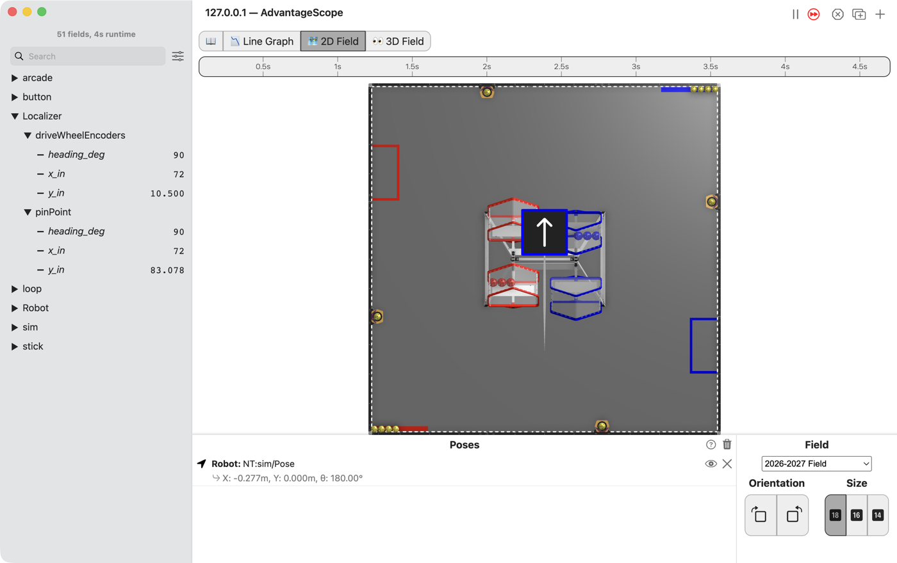
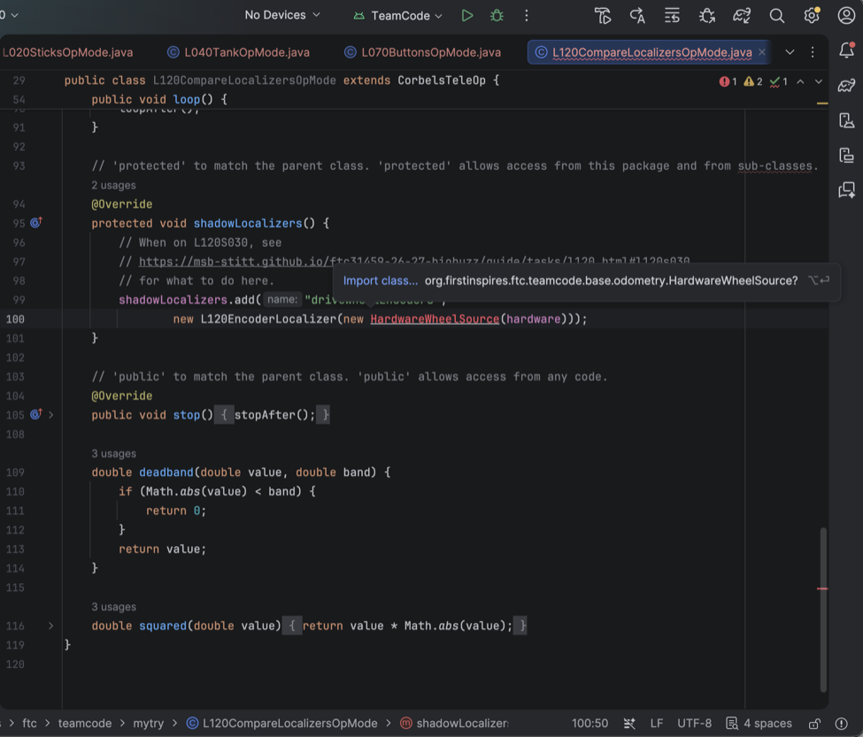
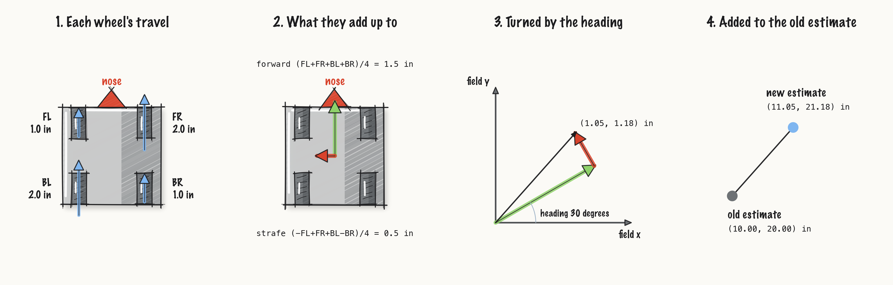
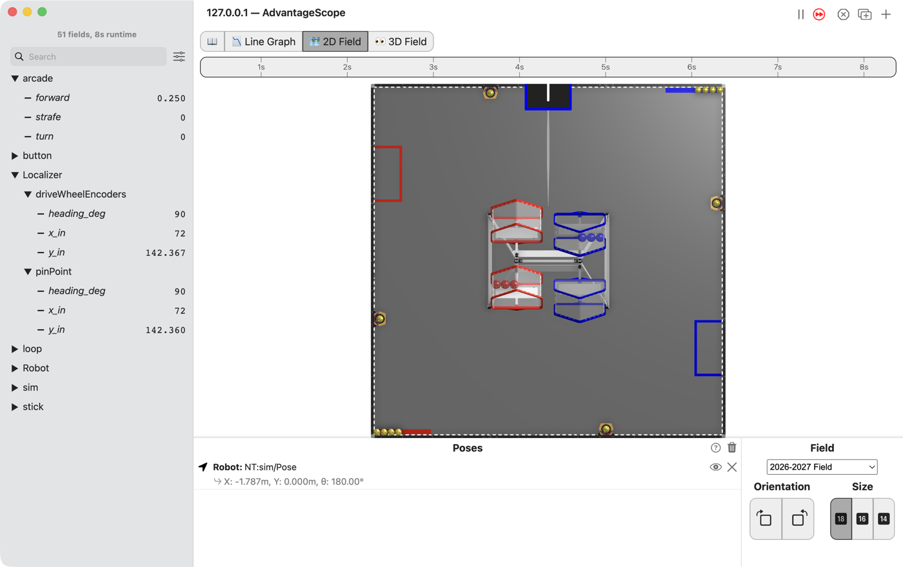

L120: work out where the robot is from the drive wheels¶

AdvantageScope’s 2D Field and list with the Localizer folder open: pinPoint/y_in at 83.078 while the robot drives forward, and driveWheelEncoders still at x 72, y 10.5 and heading 90, where it started.¶
Your own localizer runs beside the robot’s own, and both are published so they can be graphed against each other. Yours counts how far the four drive wheels roll. The robot’s own counts the Pinpoint’s two pods. Neither is the truth. A tape measure is.
The steps¶
L120S010: copy the two starters into mytry¶
This lesson has two files. One is the OpMode. The other is the localizer: the code that works out where the robot is.
Copy. In lessons, click L120CompareLocalizersOpMode once and copy it. Click mytry once and
paste. In the Copy Class box, click OK. If Android Studio asks whether to add the file to
Git, click Add. Do the same for L120EncoderLocalizer.
Check.
mytryholdsL120CompareLocalizersOpModeandL120EncoderLocalizer.
L120S020: switch your copy on¶
Change. In L120CompareLocalizersOpMode, delete the line @Disabled, under the comment that
names this step.
Check.
Under the step’s comment, the next line reads
// 'public' so the robot can run this OpMode. 'public' allows access from any code.
L120S030: run your localizer beside the robot’s own¶
The robot’s own localizer reads the Pinpoint. A shadow localizer runs beside it. It is updated and published every loop, but it never steers the robot.
Change. In L120CompareLocalizersOpMode, find shadowLocalizers() and the comment that names
this step. Under it, type:
// When on L120S030, see
// https://msb-stitt.github.io/ftc31459-26-27-biobuzz/guide/tasks/l120.html#l120s030
// for what to do here.
shadowLocalizers.add("driveWheelEncoders",
new L120EncoderLocalizer(new HardwareWheelSource(hardware)));
HardwareWheelSource turns red, because this file does not know where it lives yet.
Click
HardwareWheelSource.Press Option+Enter on a Mac, Alt+Enter on Windows, and pick Import class….
Android Studio adds an
importline at the top of the file, and the red goes away.

Android Studio with HardwareWheelSource underlined in red and the popup offering Import class… org.firstinspires.ftc.teamcode.base.odometry.HardwareWheelSource? with ⌥↩.¶
Simulator. In the Terminal, run:
./gradlew :TeamCode:simRun --args="mytry.L120CompareLocalizersOpMode --pad"
AdvantageScope. Connect to the simulator as in L020. Open the Localizer folder, then
driveWheelEncoders and pinPoint inside it.
Check.
Both start at
x_in72,y_in10.5 andheading_deg90.Push the left stick forward.
pinPoint/y_inclimbs, anddriveWheelEncodersstays where it started. Yours does not count anything yet.
x_in is how many inches the robot is from the left edge of the 2D Field, and y_in how many from
its bottom edge. heading_deg is the way the robot’s nose points, and 90 is straight up the field.
Since L040, the Poses list has called that same direction 180°. Both mean up the field.
L120S040: add up how far the wheels rolled¶
update runs once a loop. Each time, it can only see how far each wheel has rolled in total, so it
remembers last loop’s numbers and takes them away.
The first loop has nothing to take away from, so it only remembers.
Change. Press Ctrl+C in the Terminal to stop the simulator. Open L120EncoderLocalizer. In
update, find the comment that names this step. Under it, type:
// When on L120S040, see
// https://msb-stitt.github.io/ftc31459-26-27-biobuzz/guide/tasks/l120.html#l120s040
// for what to do here.
if (lastWheels == null) {
lastWheels = wheels.clone();
lastRawHeading = rawHeading;
return;
}
double frontLeft = wheels[0] - lastWheels[0];
double frontRight = wheels[1] - lastWheels[1];
double backLeft = wheels[2] - lastWheels[2];
double backRight = wheels[3] - lastWheels[3];
double forward = (frontLeft + frontRight + backLeft + backRight) / 4;
double strafe = (-frontLeft + frontRight + backLeft - backRight) / 4;
x += forward;
y += strafe;
Android Studio types the } for you when you press Enter after the {. Type the rest below it.
null means “nothing yet”. .clone() makes a copy, so next loop’s numbers do not change it.
return leaves update early, until next loop.
The two long lines are L090’s table read backwards. There, three numbers made four wheel powers.
Here, four wheel moves make forward and strafe again, in inches.
Check.
In the Terminal, run this. It prints
8 tests completed, 2 failed, thenBUILD FAILEDand more red lines. That is what failing tests look like here, and two are meant to fail now../gradlew :TeamCode:testDebugUnitTest --tests '*L120EncoderLocalizerTest*'
The two that fail are
appliesTheHeadingSoSidewaysIsRelativeToTheRobot and
setPoseMovesTheEstimateWithoutMovingTheRobot. Both are about which way the robot faces. That is
the next step.
L120S050: turn the step to face the way the robot faces¶

One loop of dead reckoning: the four wheel travels since the last loop, the forward and left arrows those add up to, the same pair turned to point along the robot’s heading, and the old estimate with that pair added on the end.¶
forward is forward for the robot, not for the field. The robot starts facing along the field’s y,
so its forward is the field’s y. L120S040 added it to x.
Change. Delete the two lines x += forward; and y += strafe;. Find the comment that names
this step. Under it, type:
// When on L120S050, see
// https://msb-stitt.github.io/ftc31459-26-27-biobuzz/guide/tasks/l120.html#l120s050
// for what to do here.
double heading = rawHeading + headingOffset;
x += forward * Math.cos(heading) - strafe * Math.sin(heading);
y += forward * Math.sin(heading) + strafe * Math.cos(heading);
Math.cos and Math.sin share the step out between x and y. Facing along x, cos is 1 and sin
is 0, so forward all goes on x. Facing along y, cos is 0 and sin is 1, so forward all goes on y.
In between, each gets a part.
heading counts in radians, not degrees. One whole turn is about 6.28 radians. Math.cos and
Math.sin use radians.
Check.
Run the same test command again. It ends with
BUILD SUCCESSFUL.

AdvantageScope’s 2D Field with the robot at the top of the field, its arrow pointing up, and the list with the Localizer folder open: driveWheelEncoders and pinPoint both at x 72 and heading 90, and y_in at 142.367 and 142.360.¶
Simulator. Run the command from L120S030 again, and connect AdvantageScope.
Check.
Push the left stick forward. This time
driveWheelEncoders/y_inclimbs withpinPoint/y_in, and the two stay within a tenth of an inch.
The simulator turns each wheel’s encoder by how far it rolls, so your localizer has something to count.
L120S060: drive it, then measure it¶
Robot. Stop the simulator. Send the code, run L120 Compare Localizers from the Driver
Station, and watch it in AdvantageScope.
Check.
Drive about 80 in straight ahead and stop. Both
y_innumbers moved, and they do not quite agree.Measure how far the robot really went with the tape measure.
Then put the robot on the blocks and push the left stick forward. The wheels spin, and the robot
does not go anywhere. driveWheelEncoders walks off across the field. pinPoint stays put,
because its pods are off the floor too.